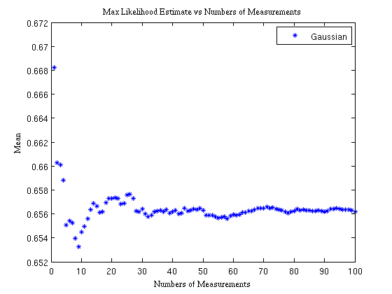
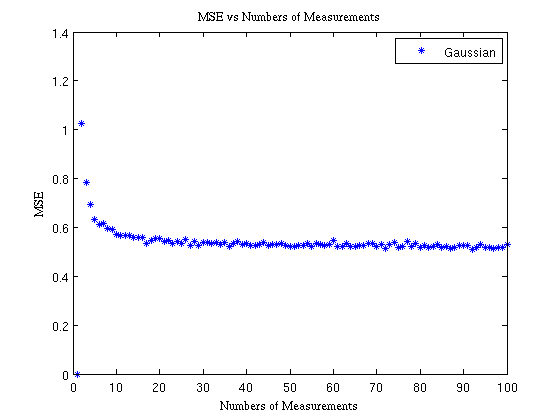
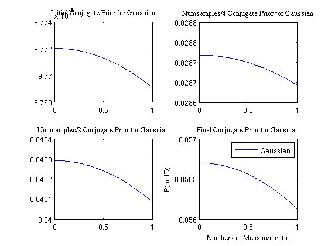
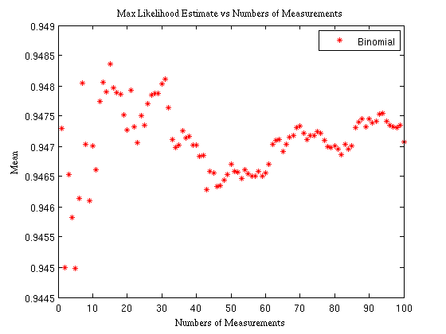
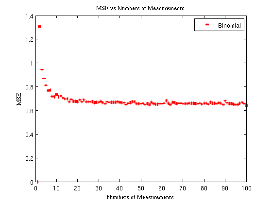
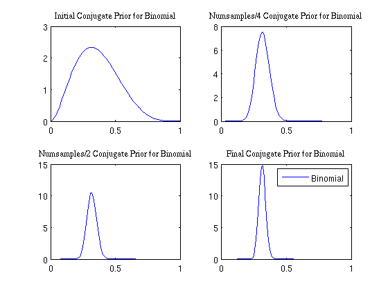

Contents
ECE 414 Project 1
Eugene Sokolov, Sheryan Resutov, Harrison Zhao
clear all
close all
clc
For Gaussian RV with unknown mean and variance
mu = rand(1)
var = rand(1)
iterations = 10000;
numsamp = 100;
gmuN = zeros(numsamp,1);
gmse = zeros(numsamp,1);
hyp = zeros(numsamp, 2);
mu0 = 0.5;
var0 = 0.5;
arbvar = 0.5;
hyp(1,:) = [mu0, var0];
for ii = 1:iterations
gaus = normrnd(mu,sqrt(var),numsamp,1);
mse = zeros(numsamp,1);
muN = zeros(numsamp,1);
muN(1) = gaus(1);
localhyp = zeros(numsamp, 2);
for N = 2:numsamp
err = gaus(N) - muN(N-1);
muN(N) = muN(N-1) + err/N;
mse(N) = err^2;
hyp(N, 1) = arbvar/(N*var0 + arbvar)*mu0 + (N*var0)/(N*var0+arbvar)*muN(N);
hyp(N, 2) = 1/var0 + N/arbvar;
end
gmuN = gmuN + muN;
gmse = gmse + mse;
hyp = hyp + localhyp;
end
gmuN = gmuN/iterations;
gmse = gmse/iterations;
hyp(2:end) = hyp(2:end)/iterations;
hyp(:,2) = sqrt(1./hyp(:,2));
figure
plot(gmuN,'b*')
title('Max Likelihood Estimate vs Numbers of Measurements','FontName','Times')
xlabel('Numbers of Measurements','FontName','Times')
ylabel('Mean','FontName','Times')
hleg = legend('Gaussian');
figure
plot(gmse,'b*')
title('MSE vs Numbers of Measurements','FontName','Times')
xlabel('Numbers of Measurements','FontName','Times')
ylabel('MSE','FontName','Times')
hleg = legend('Gaussian');
support = 0:0.01:1;
figure
subplot(2, 2, 1);
plot(support, pdf('Normal', support, hyp(2, 1), hyp(2, 2)));
title('Initial Conjugate Prior for Gaussian','FontName','Times')
subplot(2, 2, 2);
plot(support, pdf('Normal', support, hyp(numsamp/4, 1), hyp(numsamp/4, 2)));
title('Numsamples/4 Conjugate Prior for Gaussian','FontName','Times')
subplot(2, 2, 3);
plot(support, pdf('Normal', support, hyp(numsamp/2, 1), hyp(numsamp/2, 2)));
title('Numsamples/2 Conjugate Prior for Gaussian','FontName','Times')
subplot(2, 2, 4);
plot(support, pdf('Normal', support, hyp(numsamp, 1), hyp(numsamp, 2)));
title('Final Conjugate Prior for Gaussian','FontName','Times')
xlabel('Numbers of Measurements','FontName','Times')
ylabel('P(mu|D)','FontName','Times')
hleg = legend('Gaussian');
mu =
0.6560
var =
0.5183
  
For Binomial RV with unknown mean and variance
n = randi(10)
p = rand(1)
iterations = 10000;
numsamp = 100;
gmuN2 = zeros(numsamp,1);
gmse2 = zeros(numsamp,1);
mubin = n*p
varbin = n*p*(1-p)
hyp = zeros(numsamp, 2);
alpha = 1;
beta = 1;
for ii = 1:iterations
bino = binornd(n,p,numsamp,1);
mse2 = zeros(numsamp,1);
muN2 = zeros(numsamp,1);
muN2(1) = bino(1);
c = bino(1);
localhyp = zeros(numsamp, 2);
for N = 2:numsamp
err2 = (bino(N) - c/(N-1));
c=c+bino(N);
muN2(N) = c/N;
mse2(N) = err2^2;
localhyp(N, 1) = alpha + c;
localhyp(N, 2) = beta + N*n-c;
end
gmuN2 = gmuN2 + muN2;
gmse2 = gmse2 + mse2;
hyp = hyp + localhyp;
end
gmuN2 = gmuN2/iterations;
gmse2 = gmse2/iterations;
hyp = hyp/iterations;
figure
plot(gmuN2,'r*')
title('Max Likelihood Estimate vs Numbers of Measurements','FontName','Times')
xlabel('Numbers of Measurements','FontName','Times')
ylabel('Mean','FontName','Times')
hleg = legend('Binomial');
figure
plot(gmse2,'r*')
title('MSE vs Numbers of Measurements','FontName','Times')
xlabel('Numbers of Measurements','FontName','Times')
ylabel('MSE','FontName','Times')
hleg = legend('Binomial');
figure
subplot(2, 2, 1);
plot(0:0.01:1, pdf('beta', 0:0.01:1, hyp(2, 1), hyp(2, 2)));
title('Initial Conjugate Prior for Binomial','FontName','Times')
subplot(2, 2, 2);
plot(0:0.01:1, pdf('beta', 0:0.01:1, hyp(numsamp/4, 1), hyp(numsamp/4, 2)));
title('Numsamples/4 Conjugate Prior for Binomial','FontName','Times')
subplot(2, 2, 3);
plot(0:0.01:1, pdf('beta', 0:0.01:1, hyp(numsamp/2, 1), hyp(numsamp/2, 2)));
title('Numsamples/2 Conjugate Prior for Binomial','FontName','Times')
subplot(2, 2, 4);
plot(0:0.01:1, pdf('beta', 0:0.01:1, hyp(numsamp, 1), hyp(numsamp, 2)));
title('Final Conjugate Prior for Binomial','FontName','Times')
hleg = legend('Binomial');
n =
3
p =
0.3155
mubin =
0.9464
varbin =
0.6478
  